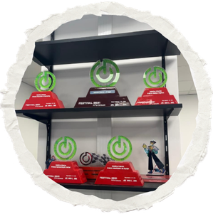

Team Curie
Uma equipe que sempre ficará no coração, que marcou meu primeiro e segundo ano como ninguém.
O time, as pessoas e os momentos ficarão para sempre em minhas memórias.

Uma equipe que sempre ficará no coração, que marcou meu primeiro e segundo ano como ninguém.
O time, as pessoas e os momentos ficarão para sempre em minhas memórias.
Na Curie, como gestora de empreendimentos, liderei a criação de novos projetos e aprimoro a eficiência,
o desempenho e a sustentabilidade dos negócios, além de monitorar os custos. Minha paixão pela inovação
me leva a explorar novas tecnologias o que manteve nossos empreendimentos competitivos. Tenho experiência em
modelagem em máquinas 3D desde o início na equipe de engenharia.

Na competição nacional, conquistamos importantes reconhecimentos que refletem todo o esforço, dedicação e trabalho em equipe ao longo da nossa trajetória. Entre os prêmios recebidos, destacam-se:
* Propaganda e marketing, pelo desenvolvimento de estratégias criativas e eficazes
* Melhor apresentação verbal, demonstrando clareza, confiança e domínio do conteúdo
* Identidade da equipe, evidenciando nossa organização, valores e espírito coletivo
* Prêmio de mídias digitais, pelo destaque na comunicação e presença online
* 2º lugar nas seletivas internas, reforçando nossa consistência e desempenho ao longo da competição
Essas conquistas representam não apenas resultados, mas também o aprendizado, a evolução e as experiências que marcaram profundamente nossa jornada.
A Curie, para mim, não foi apenas uma equipe ou uma escuderia, mas sim uma família. E essa família esteve comigo até o fim.
Além disso, realizamos alguns trabalhos voluntários ao longo da nossa trajetória na equipe, fortalecendo ainda mais nossos laços e nosso propósito.